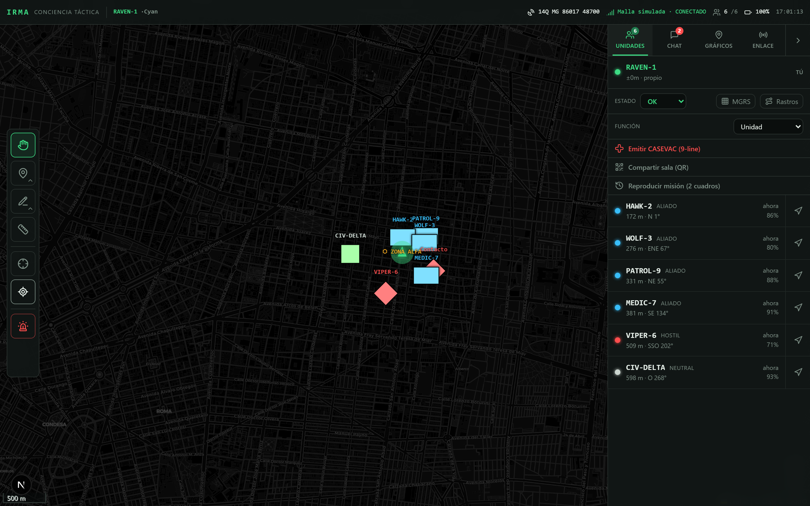
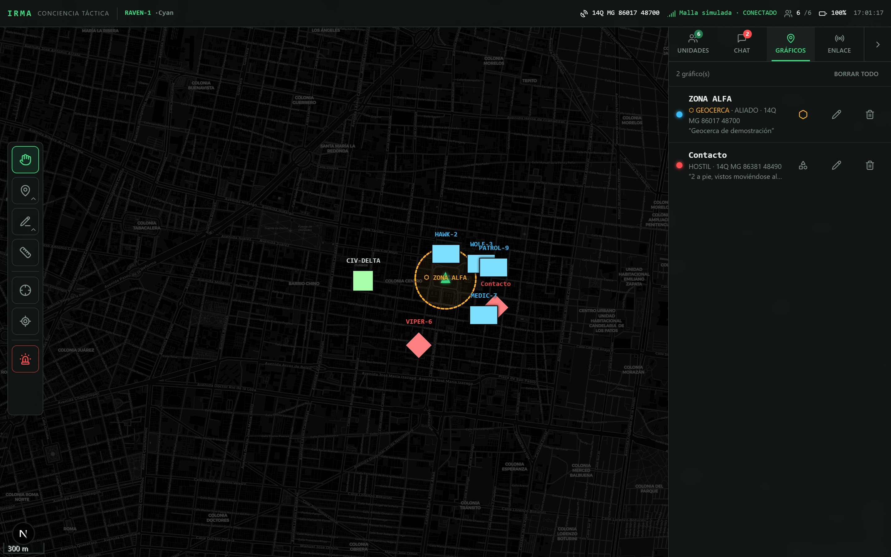
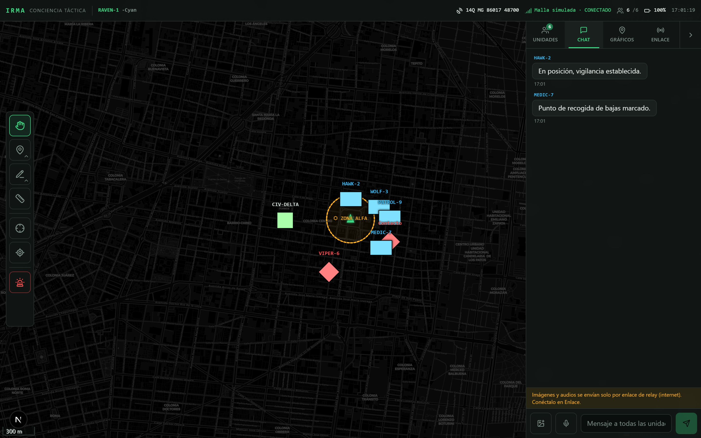
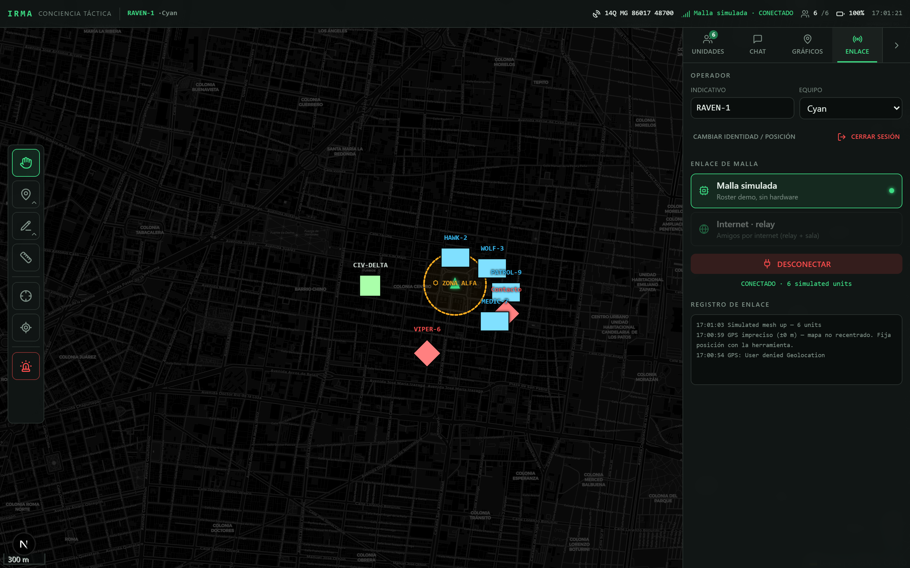
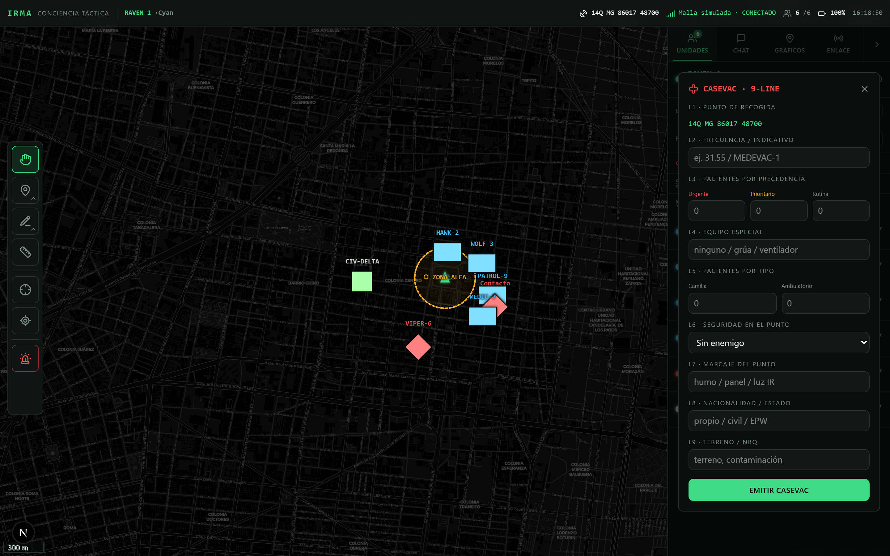
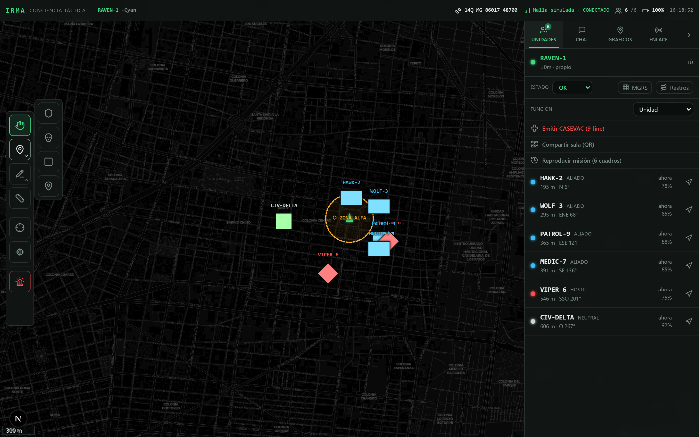
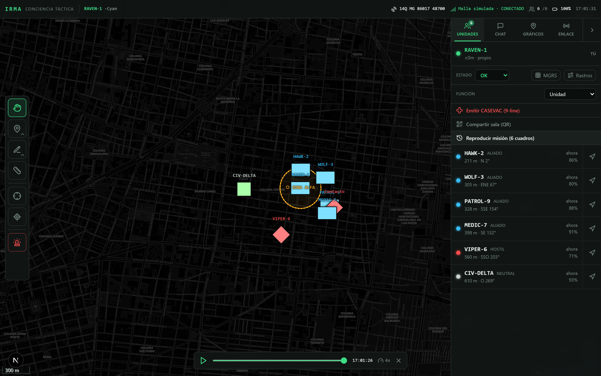

Cada miembro del equipo aparece en el mapa de todos en tiempo real, con comunicaciones cifradas y herramientas de coordinación sobre el mismo mapa.
Es una página web. Corre en teléfono, tablet o PC. Se entra escaneando un QR o con un código de sala.
Un código de sala forma la red: todos los que entran se ven entre sí, desde cualquier conexión.
El tráfico de la sala se cifra con una frase compartida; el servidor solo retransmite, no lo lee.
Tocas una unidad en el panel Unidades y el mapa vuela a ella. Cada una muestra rumbo, distancia y estado: OK, Herido o Ayuda.
Símbolos MIL-STD-2525C. El botón MGRS sobrepone la cuadrícula militar en metros.
Con el dock izquierdo dibujas líneas, zonas y geocercas; aparecen en el mapa de todos al instante.
Mantienes pulsado el botón de voz para hablar (PTT). La cámara va directa entre dispositivos, sin pasar por el servidor.
El botón de sirena avisa a toda la red con tu posición. Emitir CASEVAC manda la evacuación de 9 líneas.
El botón Rastros pinta el recorrido. Reproducir misión repite el movimiento del equipo en una línea de tiempo.
La flecha verde eres tú, orientada con la brújula del teléfono. Cada compañero aparece con su símbolo militar, rumbo, distancia y batería. Tocas su nombre en el panel Unidades (derecha) y el mapa vuela hasta él.

El perímetro se traza así: en el dock izquierdo eliges Dibujar ▸ Círculo (o Polígono) y tocas el mapa para definir la zona. En el panel Gráficos la marcas con ⬡ como geocerca. A partir de ahí todos la ven en su mapa y reciben aviso cuando una unidad entra o sale.

Escribes en la pestaña Chat y el mensaje llega a todos los de la sala. Con enlace de relay puedes adjuntar imágenes y notas de voz.

En la pestaña Enlace eliges el transporte y conectas: malla simulada para probar, o relay por internet para salir con tu equipo. El punto de estado dice la verdad — verde conectado, ámbar conectando, rojo sin enlace.

Botón Emitir CASEVAC (9-line) en el panel Unidades: rellenas las nueve líneas (recogida, pacientes, seguridad, marcado…) y la solicitud se difunde a la red con el punto de recogida exacto ya cargado.

En Marcadores eliges Aliado (escudo), Hostil (calavera) o Neutral y tocas el mapa para colocarlo. La regla mide distancia y rumbo entre dos toques. El botón de sirena emite la alerta de pánico.

Botón Reproducir misión en el panel Unidades: una línea de tiempo repite el movimiento de todo el equipo. Play/pausa, velocidad y salir, abajo del mapa.
